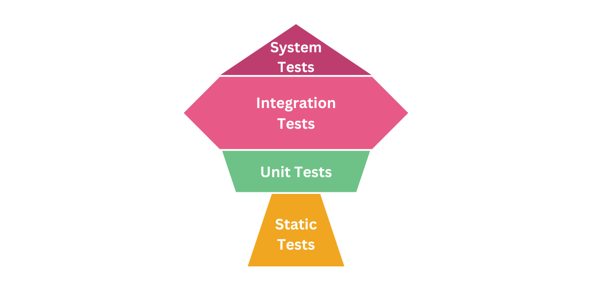

TESTES AUTOMATIZADOS E CONTINUOS
Pós Graduação: Eng de Software com foco em devops
Quem somos nozes?
Automação de Testes em DevOps
Cronograma da Disciplina
A ideia da disciplina é sair da visão tradicional de QA e entrar em uma visão moderna:
Testes como parte contínua da engenharia de software.
Estratégia do Cronograma
08/05 → Fundamentos e Estratégia
09/05 → UI e Testes E2E
21/05 → APIs e Microserviços
22/05 → Continuous Testing
23/05 → Performance, Segurança e Observabilidade
Alessandro Feitoza
- Professor de códigos e outras computarias
- Programador/Dev/Severino
- PHP com Rapadura | PHPeste
- Bússola Social

Encontro 1 — Fundamentos e Estratégia
08/05
- O papel do QA no DevOps
- Fim do silo de testes
- Pirâmide vs Troféu de Testes
- Shift-Left e Shift-Right
- Testabilidade e desacoplamento
- SOLID aplicado à automação
Encontro 2 — UI e E2E
09/05
- Playwright ou Cypress
- Estratégias E2E
- Flakiness
- Page Object Model
- Screenplay Pattern
- Testes visuais
- Acessibilidade automatizada
O Maior Problema do E2E
Flaky Tests
Testes que falham sem motivo aparente.
- Timeouts
- Dependência de ambiente
- Selectors frágeis
- Race conditions
Encontro 3 — APIs e Microserviços
21/05
- TDD na prática
- Testes de integração
- Mocks e isolamento
- Bancos e APIs externas
- Contratos entre serviços
- Pact / Consumer-Driven Contracts
Problema dos Microserviços
Quebras silenciosas de integração
Um serviço muda a resposta da API... e outro serviço quebra dias depois.
Testes de contrato ajudam a prevenir isso.
Intervalo Estratégico
Pausa para absorção
Momento focado em prática assíncrona, revisão de conceitos e consolidação.
Encontro 4 — Continuous Testing
22/05
- Testes no CI/CD
- GitHub Actions
- GitLab CI
- Jenkins
- Quality Gates
- Execução paralela
- Performance do pipeline
Quality Gates
“Não sobe para produção”
- Cobertura baixa
- Falha de segurança
- Lint quebrado
- Teste falhando
Encontro 5 — Não Funcionais e Observabilidade
23/05
- Carga e performance
- K6 e JMeter
- DevSecOps
- SAST e DAST
- Chaos Engineering
- Observabilidade
Chaos Engineering
“Quebre o sistema de propósito.”
O objetivo é validar resiliência antes do problema real acontecer.
- Derrubar serviços
- Aumentar latência
- Simular falhas
- Testar recuperação
Projeto Final
Pipeline completo de testes
A ideia é integrar múltiplos níveis:
- Unitários
- Integração
- Contrato
- E2E
- Performance
- Segurança
Objetivo Final
Construir software confiável, observável e sustentável.
Testes não são custo. São estratégia de engenharia.
AULA 01
Testes Automatizados e Contínuos
Aula 01: Fundamentos e Mindset DevOps
Por que investir em testes?
- 🐛 Evita bugs em produção
- 💻 Facilita manutenção e refatoração
- 📈 Reduz custos a longo prazo
- 🧠 Documenta o comportamento esperado do sistema
- 👥 Facilita o trabalho em equipe e onboarding
- 🔄 Torna refatorações mais seguras
- 🚨 Detecta falhas rapidamente
O Cenário DevOps
- Fim dos silos (Dev | QA | Ops)
- Feedback contínuo
- Time to Market vs Qualidade
Por que testar cedo? (Shift-Left)
Quanto mais tarde um bug é encontrado, mais caro ele custa.
"Encontrar um erro em produção pode ser 100x mais caro do que na fase de design." - Lei de Boehm
Custo para corrigir uma falha

Retirado de relatório da IBM
Estratégias
Pirâmide
- Mais testes unitários
- Poucos E2E
- Execução rápida
- Baixo custo
Troféu
- Foco em integração
- Menos mocks desnecessários
- Mais confiança real
- Popular no ecossistema frontend


Shift Left & Shift Right
Shift Left
Encontrar problemas o mais cedo possível.
Shift Right
Continuar validando comportamento em produção.
Observabilidade, feature flags, chaos engineering, monitoramento e feedback contínuo.
A Pirâmide de Testes
E2E (Topo): Poucos e lentos
Integração (Meio): Moderados
Unitários (Base): Muitos e rápidos
Objetivo: ROI máximo e feedback rápido.
Qualidade do Teste: Princípios FIRST
- Fast (Rápido)
- Independent (Isolado)
- Repeatable (Repetível)
- Self-validating (Auto-validável)
- Timely (No tempo certo)
TDD: Test-Driven Development
- RED: Escreva um teste que falha
- GREEN: Escreva o código para passar
- REFACTOR: Melhore o código
MÃO NA MASSA
Mão na Massa! 🛠️
Desafio: Motor de Descontos
- Abaixo de R$ 100: 0% desconto
- R$ 100 a R$ 500: 10% desconto
- Acima de R$ 500: 15% desconto
- Negativos/Inválidos: Erro!
Setup do Ambiente
mkdir aula01-testes
cd aula01-testes
npm init -y
npm install jest --save-dev
Exemplo do Primeiro Teste (RED)
const calcularDesconto = require('./motor');
test('Compra de R$ 50 não deve ter desconto', () => {
expect(calcularDesconto(50)).toBe(50);
});